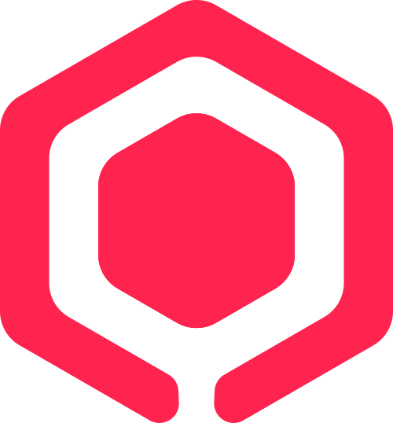

atomos-cli --install Compute
Compute
AlmaLinux. Virtual machines on this host.
Compute runs on AlmaLinux. atomos-cli installs Compute, Storage, or Full. Ubuntu and Debian are documented for storage only.
PCI passthrough can hand a physical GPU to a guest. Partitioned GPUs are not in this release. Validate the GPU and driver on your hardware.
Electros registers the host, checks the certificate, and runs the VM workflow. The host itself is still Linux, atomos-cli, and libvirt.
No need to be fancy to be just right. At Elemento, we believe in the Linux paradigm. We didn't want to reinvent virtualization from scratch, forgetting all the great work behind KVM and QEMU over the past 30 years.
Instead, we built on top of KVM and QEMU to create AtomOS, a hypervisor that is open, portable, and secure.
Electros is the desktop for every registered AtomOS host. The local console is the machine you are on.
 Electros
Desktop. Every registered host.
Electros
Desktop. Every registered host.
 Host A
AtomOS
Host B
AtomOS
Host C
AtomOS
Local UI
This server only.
Host A
AtomOS
Host B
AtomOS
Host C
AtomOS
Local UI
This server only.
The local console lists this machine. Electros lists Host A, Host B, and Host C.
atomos-cli --install Compute
AlmaLinux. Virtual machines on this host.
atomos-cli --install Storage
AlmaLinux, Ubuntu, or Debian. Volumes on this host.
atomos-cli --install Full
AlmaLinux. Compute and storage on the same host.
From the 16 October 2026 technical manual.
Documented
KVM virtual machines, volumes, and the host bridge are the baseline. Install Compute, Storage, or Full with atomos-cli. A vault module is not a configured pool until you create it.
Documented
Electros registers every host in the fleet. atomos-cli stays on the single machine.
Documented
A physical GPU can be assigned to a guest when IOMMU groups allow it. Partitioned GPUs, MIG, and SR-IOV are not part of this release.
Prove it on your build
Live migration needs matching CPUs, shared storage, and a network path. Dynamic load balancing exists on suitable builds. Measure the trigger, pinning, and maintenance window before you rely on it.
Prove it on your build
Hot add is implemented. Windows guests do not support hot-unplug of CPU or RAM. A successful API call is not proof the guest is using the new size.
Prove it on your build
Integration components exist. A certified restore runbook does not. Test full and file restore, including a database, on the Veeam and AtomOS versions you will run.
Compute and full installs use AlmaLinux. A Red Hat hardware catalogue is evidence about the OS, not an AtomOS certification.
Compute and full installs use a supported AlmaLinux 9 release. The October 2026 guide uses 9.8. Do not treat that as support for 10.x.
A Red Hat hardware catalogue describes the operating system. It is not an AtomOS certification of your server, GPU, or NIC.
Install an AlmaLinux release the chosen AtomOS build actually supports. Confirm hostname, DNS, NTP, and a clean reboot before you run atomos-cli.
Confirm the kernel sees virtualization, disks, NICs, and the IOMMU groups you need. A catalogue entry is not a passthrough test.
Reference family
Manual updated 16 October 2026. Check the build you install.
Install roles
Compute, Storage, or Full
Hypervisor licence
Support plans are optional
AlmaLinux
Compute and full. Not 10.x.
Inspect the bootstrap script, then install Compute, Storage, or Full. The help on the build you installed wins if it differs from this page.
curl -fsSL https://repo.elemento.cloud/get-atomos.sh -o /tmp/get-atomos.shless /tmp/get-atomos.sh && sudo bash /tmp/get-atomos.sh
on-prem. If atomos-cli --help differs, follow the installed build.
sudo atomos-cli --install Storage on-prem
sudo atomos-cli --install Compute on-prem
sudo atomos-cli --install Full on-prem
Documented host capabilities from the 1.11.0 manual. Each one still needs a test on the build you install.
Virtual machines use volumes on the host. qcow2 is the thin format to validate with the storage you choose.
Possible when CPUs match, storage is shared, and the network path is there. Measure it before you schedule maintenance around it.
Hot add is implemented. Windows guests do not support hot-unplug of CPU or RAM.
Install, bridge setup, status, and the cluster secret are host commands. Electros does not replace the machine's own Linux admin.
Dynamic placement exists on suitable builds. Confirm the trigger, pinning, and the maintenance window on your cluster.
The wizard can offer ZFS, GlusterFS, Lazydocker, and NVMe-oF. Ceph needs an explicit compatibility check. Installing a module does not configure the pool.
How AtomOS compares to the industry-leading virtualization platform
| Feature | Vmware VSphere | Elemento AtomOS |
|---|---|---|
| Hypervisor Class | Type 1 | Type 1 |
| Operating System | Proprietary Kernel | Almalinux (RHEL binary compatible) |
| Virtualization Engine | Proprietary Closed-Source | Upstream "Vanilla" KVM/QEMU |
| Management | vCenter Server VM | Electros dashboard & REST API |
| Licensing | Commercial, CPU-based | Server-based (not CPU cores or VM count) |
| Cluster Setup | Manual w/ License | C4 publishes capacity. Failover is a separate test. |
The hypervisor licence is €0 per server. Compare that with a VMware licence on the same hardware.
The 1.11.0 manual does not publish a certified guest matrix. KVM can boot many Linux and Windows systems. Windows does not support hot-unplug of CPU or RAM.
Installing a module does not create the pool. Ceph stays off until that build has been validated.
The install wizard can offer these modules. A module on disk is not a pool, an export, or a shared filesystem.
The manual lists them among storage paths to design. Confirm the network, the target, and a reboot before you place virtual disks there.
Leave Ceph disabled until you have an explicit compatibility check for the AtomOS build you are running.
Hosts publish what they can run. A client can ask for a match. Quorum, fencing, and automatic VM restart are a separate test.
C4 is the discovery and capability layer. Hosts advertise capacity. That visibility is not the same as permission to place a workload, and it is not high availability.
C4 can help place a workload on a compatible host. It does not elect a leader or fence a failed node for you.
The full hypervisor is free on every server — you only pay for optional support
Per server, regardless of CPU cores or VM count
Per server, per year — all plans include 8x5 coverage
8x5 coverage
8x5 coverage
Around-the-clock coverage
Our support model incentivizes efficient resource utilization and sustainable infrastructure choices
Unlike CPU-core or VM-count based licensing, AtomOS's per-server support pricing encourages organizations to maximize the value of each physical server. This drives investment in larger, more efficient hardware that can host more workloads with better performance per watt.
By pricing support per server rather than per CPU core or VM, we encourage organizations to choose powerful, efficient hardware that can handle more workloads with less energy consumption.
Common questions about AtomOS deployment and usage
Compute and full installs use a supported AlmaLinux 9 release. The October 2026 guide uses 9.8 and does not extend that to 10.x. Ubuntu and Debian are documented for storage-only. SUSE is still a lab combination.
PCI passthrough is the documented path, and it depends on IOMMU groups, the GPU, and the driver. Partitioned GPUs are not in this release. Prove the card on the hardware you will ship.
No. C4 discovers capacity. Quorum, fencing, fault detection, and automatic VM restart are still a test you run. A single host has no intrinsic high availability.
Electros registers the target, checks the certificate, and runs the VM workflow. The machine itself is administered with Linux, atomos-cli, systemd, and libvirt.
Integration components are available. Restore of a whole VM or a single file still has to be measured on your Veeam build, guest, and AtomOS version. RAID is not a backup.
Yes. The AtomOS hypervisor licence is €0 per server. Optional support plans are separate. Check the installed component versions before you treat a procedure as supported.
AtomOS works with Electros — and Atomosphere connectivity — to create a complete cloud platform
Orchestration dashboard for managing VMs across private clouds and existing CSP accounts from a single interface.
Learn About Electros
Connectivity technology behind Electros — a unified API over private clouds and your existing CSP accounts.
How connectivity worksThe hypervisor licence is €0 per server. Support plans are optional.